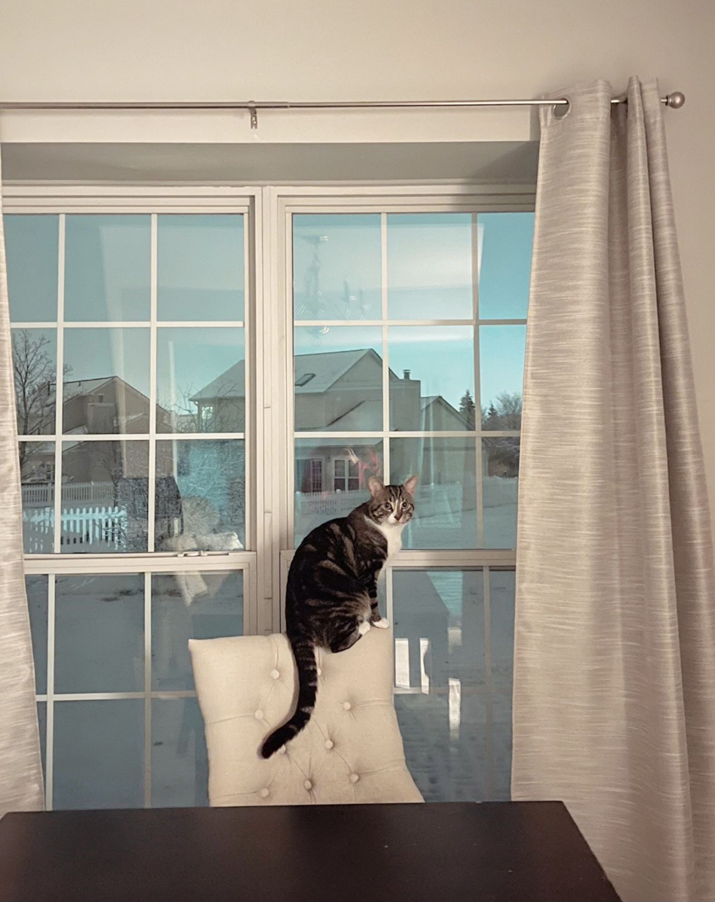
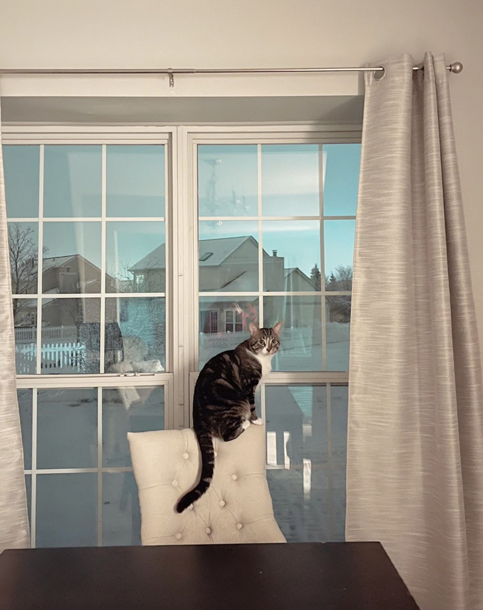

Biscuit

Biscuit is a 2 year old shiba inu dog. Shiba inus are energetic and playful dogs. Biscuit enjoys running outside in circles and then laying down in the grass in the sun for hours. He also likes going for occasional swims.
As energetic as Biscuit is, he also likes to relax. He loves to sleep in his dog bed and watch Netflix with his owners. His favorite treat are apples.
Photo Gallery


Likes
- Going for walks
- Swimming
- Apples
Hazel

Hazel is a year-old yellow Labrador retriever that enjoys long walks and playing catch (in or out of the water). She has a lot of energy, so she gets restless if she does not have enough exercise. Hazel loves meeting new people and seeing old friends. She likes to jump on people, but she is friendly and does not mean any harm.
Hazel will eat anything and everything. Like most Labrador retrievers, she loves food and will eat things that are not actually edible. Some of the things that Hazel has chewed on include hand towels, blankets, Apple Airpods, and Halloween decorations. She also loves to eat human food such as lettuce.
Photo Gallery


Likes
- Hazel likes to swim and catch her stick in the water.
- Hazel likes to go on long walks.
- Hazel likes tough chewing toys.
Bacon

Bacon Q. Dog is a 9yr old labradoodle. He prefers to spend his days lounging among the three different beds/couches that his family has gifted him. He enjoys a walk or two around the neighborhood, as long as he can pretend that he doesn't see any of the other animals to avoid the embarrassment of not wanting to admit he has no wolf-like skills in chasing them.
At night just as the rest of the family is ready to relax, Bacon suddenly wants to release all of his energy. He will place his toys on a mini couch and frantically drag the couch around, giving his toys "a ride." There is also a lot of rolling. Lots and lots of rolling.
Photo Gallery


Likes
- Belly rubs
- Playing tug-of-war
- Sneaking onto the couch
River

River is a 7 year old bichon frise. Though he is aging, he is extremely active and loves to play. He likes to throw things. He will throw his ball down the stairs and play fetch with himself if you don’t give him attention. He will also throw his food and water bowl to let us know he wants more.
River is obsessed with my mom. My mom is the one who mostly walks him and gives him treats. Anywhere my mom goes, River follows. If she's gone for 2 minutes, he will frantically search the house for her. Although he likes being with people, he hates being cuddled or held.
Photo Gallery


Likes
- Attention
- Treats
- Rolling ball down the stairs
Bear

Bear is a lazy, food-loving dog that is sometimes playful. His favorite activity is lying in the sun on his side and lounging. He enjoys playing with his toys and loves to fetch them when you throw them, but eventually, he gets bored and just stops fetching them and lays down.
Bear is also scared of a lot of things. He doesn’t like water (showers and even rain) or getting his nails clipped, and he’s sometimes even so lazy that he’ll just stop walking and sit down until you turn around and go back home.
Photo Gallery


Likes
- Food
- Laying in Bed
- Fetch
Daisy

When Daisy isn’t busy slaying all of the evil snakes trying to attack us (Pictured Above), you can usually find her annoying her older sister Marina, getting super hyper at completely random times, or relaxing in our backyard making sure she keeps out all of the intruders (squirrels)
One of Daisy’s favorite things to do is beg to go on a walk, and then once we’re about half way done with the walk she likes to lay down and refuse to keep going. She then loves being carried all the way back from said walk, and the process will repeat again later in the day.
Photo Gallery


Likes
- Shredded Cheese
- Walks around the neighborhood
- Peanut Butter Chex Cereal (specifically peanut butter kind)
Jingle

Jingle loves going outside. He used to be an outdoor/indoor cat until we realized that he loved to get injured. Now, we take him on walks with a leash which he loves! Every time he sees me carrying the leash he goes crazy and meows to go out.
Jingle is very mischievous, he has gotten into many different accidents. His first accident was outside; a bee stung his paw and he cried all night long. The second one was ALSO outside, he got stuck on a tree for four days. Finally, he came back home one day with his tail bleeding and ripped out.
Photo Gallery


 

Likes
- Going on walks.
- Being pet
- Eating treats